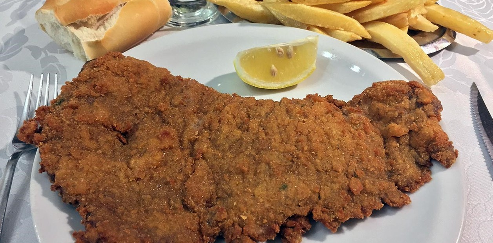

Milanesa
Receta casera de milanesa frita

Ingredientes
- 4 huevos
- 2 dientes de ajo
- Perejil picado
- Sal y pimienta, a gusto
- Pan rallado
- 1 kilo de nalga o peceto para milanesa
- Pelar los ajos y picar junto con el perejil.
- Colocar los huevos en un bowl y batir hasta disolverlos bien. Luego agregar el perejil, los ajos y
condimentar con sal y pimienta.
- Colocar la carne en la mezcla anterior, deje unos minutos, retirar y pasar por pan rallado.
- En una sartén con abundante aceite caliente freír las milanesas. Retirar y escurrir en papel absorbente.